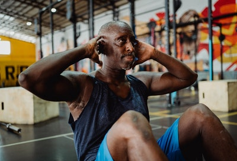

7 Most Effective Exercises
Does your workout Really Work?
Exercising is a lot more than a way to look pretty and stay healthy and fit. Working out results in having more energy, feeling happier, being more self-confident and in many more physical and mental benefits.The most frequent feeling you get, however, during your training is “like you’re going to die.” Chances are that this is not going to happen and that you actually have a lot more energy to keep exercising.
Realistically measuring how long you can go on depends on several factors such as heart rate, muscle fatigue, hunger, intensity.
A quality workout doesn’t have to be long at all despite what your ultimate goal is. Building muscle of losing weight is obtainable with 20-minute workouts as opposed to an hour at the gym (who has so much free time anyway…). Maintaining your weight doesn’t need a lot more than half an hour of brisk walk every day and eating right.
1. Walking
Walking is a great way to improve or maintain your overall health. Just 30 minutes every day can increase cardiovascular fitness, strengthen bones, reduce excess body fat, and boost muscle power and endurance. It can also reduce your risk of developing conditions such as heart disease, type 2 diabetes, osteoporosis and some cancers. Unlike some other forms of exercise, walking is free and doesn’t require any special equipment or training
Physical activity does not have to be vigorous or done for long periods in order to improve your health. A 2007 study of inactive women found that even a low level of exercise – around 75 minutes per week – improved their fitness levels significantly, when compared to a non-exercising group.
Walking is low impact, requires minimal equipment, can be done at any time of day and can be performed at your own pace. You can get out and walk without worrying about the risks associated with some more vigorous forms of exercise. Walking is also a great form of physical activity for people who are overweight, elderly, or who haven’t exercised in a long time.
2. Interval Training
High-intensity interval training (HIIT), also called high-intensity intermittent exercise (HIIE) or sprint interval training (SIT), is a form of interval training, a cardiovascular exercise strategy alternating short periods of intense anaerobic exercise with less intense recovery periods, until too exhausted to continue. Though there is no universal HIIT session duration, these intense workouts typically last under 30 minutes, with times varying based on a participant's current fitness level.[1] The intensity of HIIT also depends on the duration of the session.
HIIT workouts provide improved athletic capacity and condition as well as improved glucose metabolism.[2] Compared with longer sessions typical of other regimens, HIIT may not be as effective for treating hyperlipidemia and obesity, or improving muscle and bone mass.[3] However, research has shown that HIIT regimens produced significant reductions in the fat mass of the whole-body in young women.[4] Some researchers also note that HIIT requires "an extremely high level of subject motivation" and question whether the general population could safely or practically tolerate the extreme nature of the exercise regimen.
3. Squats
If there’s one exercise that has the ability to challenge most of the muscles in your body, it’s the squat.
The obvious muscles targeted are in the lower body, but in order to do this compound exercise correctly, you also need to use several muscles above your waist.
The lower muscles targeted in a squat include your:
gluteus maximus, minimus, and medius (buttocks)
quadriceps (front of the thigh)
hamstrings (back of the thigh)
adductor (groin)
hip flexors
calves
4. Lunges
Lunges are a powerful exercise, allowing you to shape and strengthen almost every muscle in the lower body—the hips, glutes, quads, hamstrings, and calves. Lunges are tougher than squats because the split stance puts you in an unstable position, which challenges your balance. The stance also changes the load on your body, allowing you to work each leg more independently. Learning to do them with good form, you can make them a part of any strength workout or circuit training workout.
Benefits
The lunge is a multi-joint, functional exercise. It mimics actions you take throughout daily life as well as in athletic activities. As it works your large lower body muscle groups, it builds these muscles and improves your metabolism. You also engage your core muscles for stability, which can help you maintain balance and prevent injuries. Your hip flexors are stretched, improving their flexibility and counteracting the shortening and tightening that can happen when you sit for long period
5. Push Ups
The pushup may just be the perfect exercise that builds both upper-body and core strength. Done properly, it is a compound exercise that uses muscles in the chest, shoulders, triceps, back, abs, and even the legs.
It has many modifications so beginners can start with easier versions and work up to the standard pushup, while you can find a challenging variation if you are advanced. You can do the pushup as part of a bodyweight exercise session, a circuit training workout, or a strength workout.
Benefits
The upper body muscles that come into play in the pushup are the deltoids of the shoulders, the pectoral muscles of the chest, the triceps and biceps of the upper arm, and the erector spinae of the back. The abdominal muscles used to hold the body rigid during the pushup are the rectus abdominis and the transversus abdominis. As the pushup involves multiple joints, it is a compound exercise
In daily life, you will often need to push against objects, from doors to shopping carts. The functional fitness you develop with pushups will serve you well. Working the stabilizer muscles around the shoulders can help protect you from rotator cuff injuries. Pushups are also a measure of overall fitness, allowing you to assess whether you need to be doing more to keep your body in good working condition.
6. Crunches

If you really want to get your strongest, firmest abs you want to choose exercises that target all the muscles of the core, including the rectus abdominis (or the "six pack"), obliques, transverse abdominis, and the lower back.
While there are a wide variety of exercises you can do for the abs, there are some that are better than others. In fact, the American Council on Exercise commissioned a study to find out the best and worst ab exercises.
Most Effective
- Bicycle Maneuver
- Captain's Chair
- Crunches on Exercise Ball
- Vertical Leg Crunch
- Reverse Crunch
Less Effective
- Ab Rocker
- Exercise Tubing Pull
- Traditional Crunch
- Ab Roller
- Long Arm Crunch